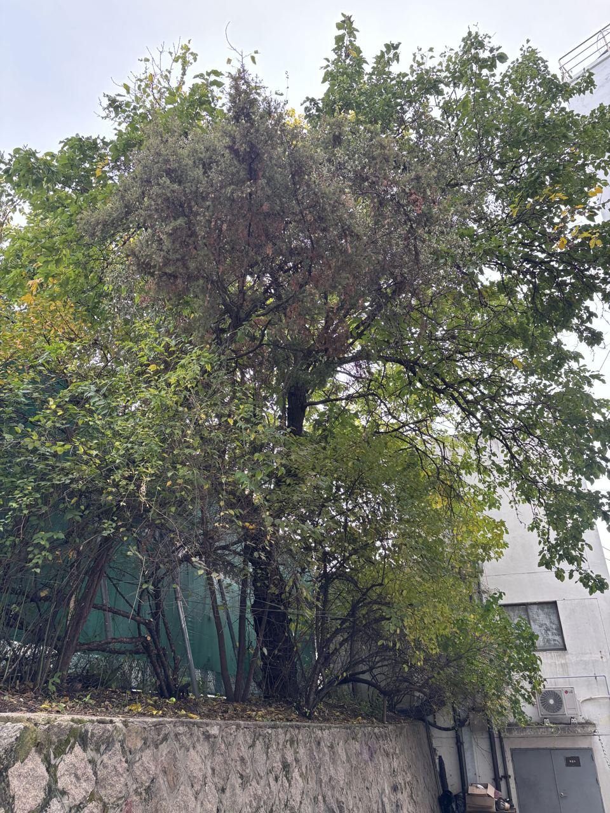

음나무
음나무는 줄기와 가지에 굵고 날카로운 가시가 많은 두릅나뭇과의 낙엽 큰키나무로, 엄나무라고도 불러요.
특징
- 어린 줄기와 가지에 굵은 가시가 촘촘히 나 있어서, 예부터 나쁜 기운을 막는다며 집 둘레에 심기도 했어요.
- 잎은 손바닥처럼 5~9갈래로 깊게 갈라지고, 크기가 커서 한 뼘이 넘기도 해요.
- 봄에 나는 어린순은 '개두릅'이라 부르며 나물로 먹고, 여름에는 가지 끝에 작은 연노란 꽃이 둥글게 모여 피어요. 🌿